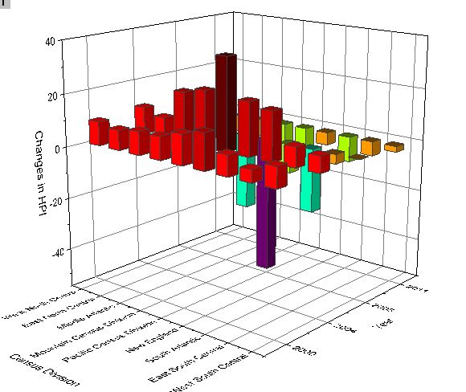

3D-Balken- und Symboldiagramm
3D-Bar-Symbol
Zusammenfassung
Dieses Diagramm ist die Kombination eines 3D-Balkendiagramms, das die Änderungen im Immobilienindex anzeigt (HPI, Home Price Index), und eines 3D-Punktdiagramms, das die Arbeitslosenrate anzeigt. Die Daten stammen aus mehreren Volkszählungen aus verschiedenen Jahren. Die Farbabbildung basiert bei beiden Diagrammen auf den Z-Werten.
Origin-Version mind. erforderlich: Origin 2015 SR0
Was Sie lernen werden
Dieses Tutorial zeigt Ihnen, wie Sie:
- ein 3D-Balkendiagramm zeichnen.
- ein Punktdiagramm zu einem Balkendiagramm hinzufügen.
Schritte
- Öffnen Sie die Datei Home Price Index Changes & Unemployment Rate.opj, indem Sie Datei: Öffnen wählen und zu <Origin-Verzeichnis>\Samples\Graphing navigieren.
- Aktivieren Sie die Mappe Home Price Index Changes & Unemployment Rate, markieren Sie die Spalten A(X), B(Y) sowie C(Z) und wählen Sie dann Zeichnen: 3D: 3D-Balken, um ein 3D-Balkendiagramm zu zeichnen.

- Klicken Sie mit der rechten Maustaste auf das Layersymbol und wählen Sie im Kontextmenü Setup Diagramm. Legen Sie im Dialog Diagrammeinstellungen die Spalten A, B und G1 auf X, Y bzw. Z fest. Klicken Sie dann auf die Schaltfläche Hinzufügen, um diese Zeichnung zu dem aktuellen Layer hinzuzufügen. Klicken Sie auf OK, um den Dialog Diagrammeinstellungen zu schließen.
- Klicken Sie zum Öffnen des Dialogs Details Zeichnung doppelt auf das Diagramm. Wählen Sie in diesem Dialog die zweite Zeichnung im linken Bedienfeld und setzen Sie den Diagrammtyp auf 3D-Streu-/Ankerlinien-/Vektordiagramm.
 |
Um alle drei Bedienfelder im Dialog Diagrammeinstellungen anzuzeigen, erweitern Sie bitte das Bedienfeld Diagrammtyp, indem Sie auf  klicken, und erweitern Sie das Bedienfeld Verfügbare Daten, indem Sie erneut auf klicken. klicken, und erweitern Sie das Bedienfeld Verfügbare Daten, indem Sie erneut auf klicken.
Bitte lesen Sie unter Mit Hilfe des Dialogs Diagrammeinstellungen zeichnen weitere Informationen zu diesem Thema.
|
- Wählen Sie im linken Bedienfeld Original, wechseln Sie dann zur Registerkarte Symbol im rechten Bedienfeld, wählen Sie Col("Unemployment rate") sowohl für Größe als auch für Farbe und setzen Sie den Skalierungsfaktor der Größe auf 2.
- Wechseln Sie zur Registerkarte Farbpalette und legen Sie Ebene und Füllung fest, wie unten zu sehen:
- Gehen Sie zur Registerkarte Beschriftung, aktivieren Sie das Kontrollkästchen Aktivieren, setzen Sie Beschriftungsformat auf Col(F) und die Position auf Oberhalb.
- Wechseln Sie zur Registerkarte Numerisches Format, wählen Sie Dezimalstellen und setzen Sie diese auf 0.
- Wählen Sie im linken Bereich Layer1. Gehen Sie im rechten Bedienfeld zur Registerkarte Ebenen, deaktivieren Sie YZ und ZX, wählen Sie die Option Bei Position= in der Auswahlliste Position und geben Sie 0 in das Feld Prozent/Wert ein.
- Wechseln Sie zur Registerkarte Achsen im rechten Bedienfeld und nehmen Sie folgende Einstellungen vor:
- Wählen Sie die erste Zeichnung unter Layer1 im linken Bedienfeld, wechseln Sie zur Registerkarte Muster und verwenden Sie die Spalte Col("Changes in HPI") als Farbabbildung für sowohl Balkenrand als auch Füllung der Form.
- Wechseln Sie zur Registerkarte Umriss und setzen Sie die Breite (in%) auf 30, wie unten zu sehen.
- Wechseln Sie zur Registerkarte Numerisches Format, wählen Sie Dezimalstellen und setzen Sie diese auf 0.

- Wechseln Sie zur Registerkarte Farbpalette und klicken Sie auf die Überschrift Ebene, um den Dialog Ebenen festlegen zu öffnen. Nehmen Sie folgende Einstellungen vor.
- Klicken Sie auf OK, um den Dialog Ebenen festlegen zu schließen. Klicken Sie auf Füllung und wählen Sie die Palette Pumpkin Patch. Klicken Sie auf OK, um den Dialog Füllung zu schließen.
- Klicken Sie auf OK, um den Dialog Details Zeichnung zu schließen.
- Wählen Sie bei aktivem Diagrammfenster Einfügen: Farbskala im Hauptmenü, um eine Farbskala für die erste Zeichnung hinzuzufügen. Klicken Sie doppelt auf die Farbskala, um den Dialog Eigenschaften Farbskala zu öffnen. Wenden Sie in diesem Dialog folgende Einstellungen an.
- Klicken Sie auf OK, um den Dialog Eigenschaften Farbskala zu schließen. Klicken Sie dann mit der rechten Maustaste auf das Layersymbol, um die andere Zeichnung über das Kontextmenü zu aktivieren, und wählen Sie Einfügen: Farbskala im Hauptmenü, um eine weitere Farbskala hinzuzufügen. Klicken Sie doppelt auf diese Farbskala, um den Dialog Eigenschaften Farbskala zu öffnen. Nehmen Sie in diesem Dialog die Einstellungen vor, die Sie auch im vorhergehenden Schritt festgelegt haben.
- Fügen Sie die Titel Änderungen Immobilienindex und Arbeitslosenrate für diese beiden Farbskalen hinzu. Das erzeugte Diagramm sollte am Ende folgendermaßen aussehen.

Kategoriale Werte steuern
- Mit den folgenden Schritten wird die Reihenfolge der Werte, wie sie im Diagramm abgebildet wird, benutzerdefiniert angepasst. Es wird dabei keine Änderung an den Quelldaten vorgenommen. Klicken Sie mit der rechten Maustaste auf den Fenstertitel der Quelldatenmappe und wählen Sie Ansicht: Kategorien. Eine neue Spaltenbeschriftung mit dem Namen Kategorien wird zum Kopf des Arbeitsblatts hinzugefügt. Klicken Sie doppelt auf "Unsorted", um den Dialog Kategorien öffnen:
- Deaktivieren Sie das Kontrollkästchen <Auto>. Sie können dann die Reihenfolge der Elemente mit Hilfe der Schaltflächen
 festlegen, basierend auf der Reihenfolge der Volkszählungsaufteilung, die unten im Diagramm gezeigt wird:
festlegen, basierend auf der Reihenfolge der Volkszählungsaufteilung, die unten im Diagramm gezeigt wird:
- Klicken Sie doppelt auf die Zelle Kategorien von Spalte B,"Unsorted", um den Dialog Kategorien zu öffnen. Wählen Sie Aufsteigend in der Liste Sortieren und klicken Sie auf OK, um den Dialog zu schließen.
- Das 3D-Balkendiagramm wird automatisch mit der neuen Reihenfolge der kategorialen Daten aktualisiert.